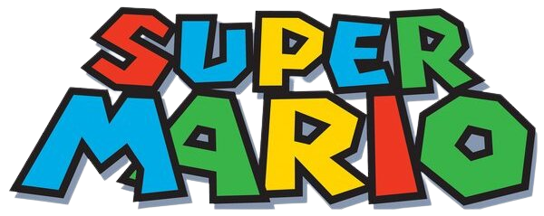
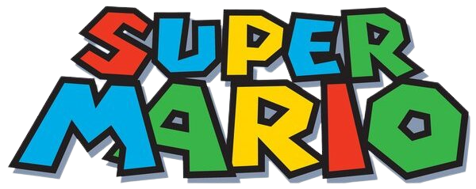

Jogo Super "Wario" World.
Jogo feito com base no curso do youtube: https://www.youtube.com/watch?v=r9buAwVBDhA&ab_channel=ManualdoDev
Alterações feitas a partir do projeto original:- Criação das telas de 'início' e o modal 'Sobre';
- A tela de início permite escolher entre os três personagens: Luigi, Mario e Yoshi.
- Contador e mostrador de pontos;
- Aumento da velocidade do personagem de acordo com a pontuação;
Autor: Marcel de Souza Bonfim

 
